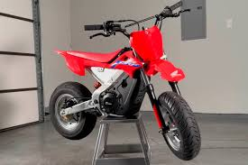

| RAYO |
|---|
LAS CRFMOTORS
| KAWASAKY |
|---|
Supersport de alto rendimiento con motor tetracilíndrico en línea de 636cc, DOHC, refrigerado por líquido e inyección DFI® con cuerpos Keihin de 38 mm. Genera hasta 127 hp a 13,000 rpm y cuenta con transmisión de 6 velocidades. Equipada con control de tracción (KTRC), quickshifter (solo subida), modos de potencia y ABS inteligente (KIBS). Suspensión delantera invertida SFF-BP de 41 mm y trasera Uni-Trak®, ambas totalmente ajustables. Asiento a 832 mm, peso de 198 kg y tanque de 17 L. Incluye pantalla TFT a color y conectividad Rideology. Colores: Lime Green / Ebony / Pearl Blizzard White. |
|---|
|
|---|